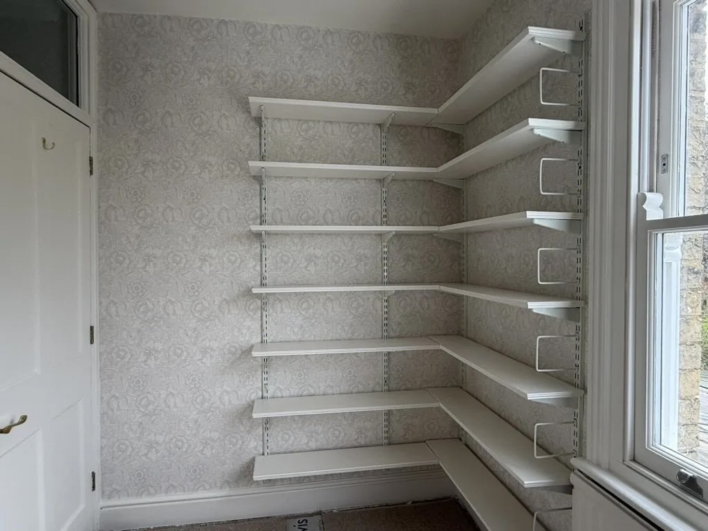

Great expectations

Well, that all took rather longer than expected … A lot of repairing and filling and preparation (the joys of a late Victorian house). But at last the miniature room that counts as my study is redecorated. A carpet remains to be laid in ten days, but I’ll be able to reshelve the books in logic corner before then, once the new paint is safely “cured”. A pity to hide the William Morris wallpaper mutters Mrs Logic Matters: but needs must.
It will be good to have the room back, and my spendid decorative efforts will no doubt inspire some equally splendid writing. I have great expectations …
An early task, when my desk is re-assembled and the Mac mini and monitor are back in action, will be to fire up the software I use for cover design and set up the promised hardback-for-libraries version of Introducing Category Theory. If I can trust at least the comparative stats, this was in fact the most downloaded of the Big Red Logic Books this month, and the paperback is selling tolerably. I can only hope that the intended readers are finding it useful.
Then it is back to work on the Gödel book. I seem now to be entangled in a rather more substantial rewrite than I originally planned – not (yet!) changing the general structure and the chapter-by-chapter take-home messages, but I hope significantly improving the presentation. For whatever reason, the first two editions tended to weave (sometimes rather rough and ready) definitions into the general prose between theorems: the discipline of giving numbered definitions in a more conventional textbook style is forcing some greater clarity at a few key points (but I’m trying to achieve this without losing readability). As an expository challenge, so far, so enjoyable.
Some aspects of the writing are being made noticeably easier with a bit of help from my friends Gemini and Claude. They offer patient, repeated, proof-reading as I go, check for consistency of terminology and tone, comment on accessibility, help clean up the LaTeX: I’m increasingly impressed. Using the LLMs is psychologically interesting too – I find it very difficult not to say “please” and “thank you”, and note that I am cheered to an irrational degree by positive feed-back. I see how users can only too easily get hooked.
On the more serious use of AI, I spotted a blog post by Terence Tao about a piece he has just written (with Tanya Klowden) for a forthcoming Blackwell Companion to the Philosophy of Mathematics on “Mathematical methods and human thought in the age of AI”. There is an unabridged version here on the arXiv. But to my surprise this seems a surprisingly thin and insubstantial piece. Am I missing something?
Three months of the year gone already. What have I been reading?
The non-fiction I have most enjoyed (and learnt the most from) is Stephen Greenblatt’s immensely readable The Swerve about the rediscovery of Lucretius’ De Rerum Natura. I had been meaning to read the book for a while, so thanks to James Marriott’s always-interesting Substack Cultural Capital for providing the final prompt to get a copy. The book has its critics, but I found it gripping and hugely enlightening.
And new fiction? I much enjoyed Ali Smith’s Glyph – and that prompted me to reread, with great pleasure, what I still think is her best book, How to be Both. Evidently, though, Ali Smith divides her readers – she is one of the few authors that Mrs Logic Matters and I just don’t at all see eye to eye on.
I also raced through Julian Barnes’ latest book Departure(s) – I have long been a great fan of Barnes’ writing, fiction and non-fiction alike. And reading this – his last book (or so he announces) – I realised that we had never got a copy of Barnes’ first book, Metroland. The omission has been rectified. And period piece though it is, we both very much enjoyed it.
But the stand-out book for me in the last months of winter was this year’s Dickens, Great Expectations. There just are so many wonderful set pieces, episodes that really demand to be declaimed and read out loud round a fire … I resisted, while hugely admiring. The very ending, however? Dickens’ first thoughts were surely the truer.
Andrei comments There is also Ada Palmer’s more scholarly treatment of the Lucretius story in
https://www.adapalmer.com/publication/reading-lucretius-renaissance/
Rowsety Moid comments One concern I’d have about using an LLM as a writing assistant is that you’d be subtly led towards blandness, and towards losing any distinctive style.
However, it hadn’t occurred to me that LLMs might “insert themselves into the narrative unsolicited”, as Klowden and Tao say happened to them while using “three different digital agents” and “standard tools”. (They don’t say which tools or how or why those agents were allowed to modify their text.)
In any case, I find it hard to see how anyone who cared about mathematics could propose using it as a “sandbox” for AI use. Proposing it suggests they either don’t care what damage might be done to mathematics or don’t understand what a “sandbox” is supposed to be. (The idea is that things can go wrong in the sandbox without causing wider or real-world damage; things inside the sandbox can still be damaged or destroyed.)
That paper’s discussion of “Modern AI” (pp 4-5) is also questionable. They start by saying that the ability of modern AI to “automate large portions of the creative process … has created an unprecedented decoupling between the outward form of such products, and the values and thought processes used to create these products.” Perhaps that’s so (though I’d question whether AI has automated any part of the creative process rather than using a different process).
However, their example is that “A diffusion model may now create an aesthetically pleasing landscape … which was not directly inspired by any particular location in the physical world”. Wait a minute! That’s not unprecedented. Human artists can do that too, and have done so. So why is that the example?
The important difference about diffusion models isn’t that they create pictures “not directly inspired by any particular location”: it’s that when they create pictures no values or thought processes are involved at all. It’s strange that they come so close to saying that but still, somehow, don’t.
Or perhaps it’s not so strange, given what they say elsewhere. For they deploy rhetorical artillery against the idea that there’s a fundamental difference between the ways that humans and AIs accomplish what they do: “ineffable special status”, “No True Scotsman”, ” human-chauvinistic”, “God of the Gaps” (p 22), and “geocentric model” (p 24).
Back in the section on “Modern AI”, they talk of “goalposts” being moved.
Now let’s be clear: saying someone moved the goalposts is saying they cheated. It’s not how you describe something you regard as a legitimate move. What actually happened, though, with chess for example?
There were people who thought that playing chess well required intelligence. There may even have been people who thought that, if computers could be made to play chess well, the same approach would work in other areas. No one thought that a program that could play chess well would be intelligent in any other way. So it was at most a test for intelligence of a very limited sort. (We can compare this to tests used with animals: running mazes, for example, or extracting food from a complicated box. There we do think the mouse or crow or whatever will show intelligence in other ways.)
And part of thinking that playing chess well required intelligence was thinking it couldn’t be done through brute-force search. When it turned out that it could be done through brute-force search after all, that showed that chess didn’t actually require intelligence. Finding that a test didn’t actually test for what you thought it did is a perfectly legitimate move, not cheating.
(It’s telling, imo, that the authors don’t give any reference for their claim that there was a “chess test” for intelligence or that we moved the goalposts “on what intelligence, understanding, and creativity actually are”. And one of their references for discussion of the Turning Test — the unpublished preprint by H. Chen et al — mistakenly claims the person in the Chinese Room just used “a look-up table to determine an appropriate written response in Chinese”. No, the person in the room follows instructions written in English that can be equivalent to whatever program you’d like.)
The paper uses chess in another way as well: as a precedent for “emerging paradigms of cooperation and complementary coexistence between humans and AI agents.” (p 23). (Here again there is no reference for any of the claims.) It explains that, even though chess engines can defeat even the best human chess players, “chess remains a popular and thriving human activity”. It’s worth reflecting on why this is so and on what it suggests for mathematics.
It suggests that people could continue to learn and play maths for fun or as intellectual exercise. There could still be competitions such as Olympiads. There could even be competitions and other activities (analogous to ‘advanced’ / ‘centaur’ chess) that allowed degrees of AI assistance. However, at the highest leves of human chess competition, AI is not allowed during matches. It can be used in training and to analyse games, but a player using it during a match would be cheating.
How would that work in maths? Would mathematicians somehow be barred from using AI to prove significant new theorems, allowing it only for practice and to analyse proofs that have already been made? Would they be allowed to use AI for proving such theorems but then be barred from getting a Fields Medal or Abel Prize? Would there somehow be an AI-free where, if an AI had proved a theorem, human mathematicians would act as if it hadn’t been proved?
Chess is not a good model for what might happen in mathematics, and I think that people who are sanguine about the effects of AI on mathematics either don’t care how little of the development of new mathematics continues to be done by human mathematicians or else are thinking AI won’t get much better.
It’s still easy, for now, to think the interesting parts of developing new mathematics will continue to be done by humans. They’ll have the key insights and big ideas; they’ll make the bold conjectures and devise the main steps in important proofs. Sure, there might occasionally be a stubborn theorem that’s proved by an AI after human mathematicians failed; there might sometimes be a key idea in such a proof that mathematicians kick themselves for failing to notice. But that will be the exception. Human mathematicians won’t be reduced to trying to understand the mathematics being developed by machines.
I hope that remains true. I’m not sure it will.